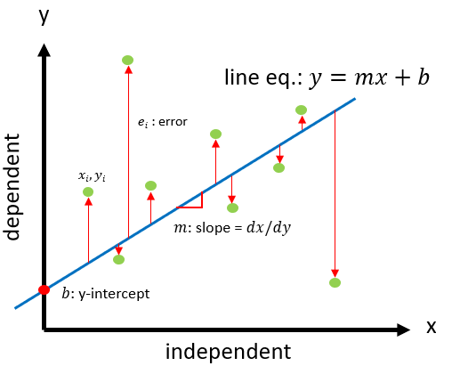
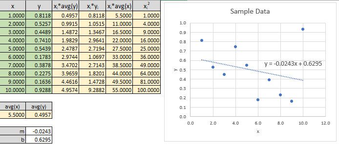

Linear Regression Linear Curve Fitting (Method of Ordinary Least Squares)#
Problem Statement#
Given a cluster of points find a best fit linear line equation.

Solution#
where,
\(m\) = slope
\(b\) = y-intercept
\(x_i\), \(y_i\) = x,y points
\(\overline{x}\), \(\overline{y}\) = average of x and y
Example#

Derivation#
We want the final form of our equation to be:
However to talk in terms of real data, we must find a way to express eq3 with error (\(e_i\)):
There are several method for solving for \(m\) and \(b\) that minimizes \(e\), here we are going to demonstrate the method of least squares:
We can solve for \(b\) and \(m\) by taking the partial derivatives (chain rule):
Step 1: Partial Derivative of y-intercept \(b\)#
pull out the constant from the summation
divide both sides by \((-2)\), and expand the summations
notice that \(b\) is a constant therefore it can be simplified to
note that \(\sum_i^n(1)=n\) where \(n\) is the number of data points, with this we can write:
divide left and right side by \(n\), we get:
note that \(\sum_i(y_i)/n\) is really just the average of \(y\) or \(\overline{y}\) for short notation:
solve for y-intercept \(b\) we get:
Step 2: Partial Derivative of slope \(m\)#
factoring out the constant \(-2\) and \(x_i\) we get:
substituting in \(eq12\):
expanding out and split the summation of additions/subtractions:
subtract out the non-sloped summation from both sides to get:
simplify out common \(m\) slope term on left side:
solve for \(m\) and simplify:
References#
George A. F. Seber and Alan J. Lee, Linear Regression Analysis 2nd ed. Wiley, 2014.